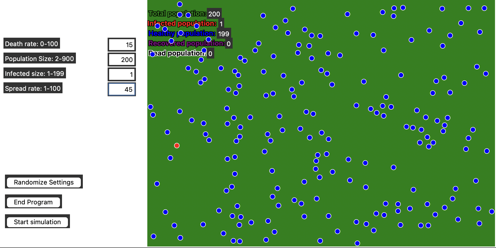
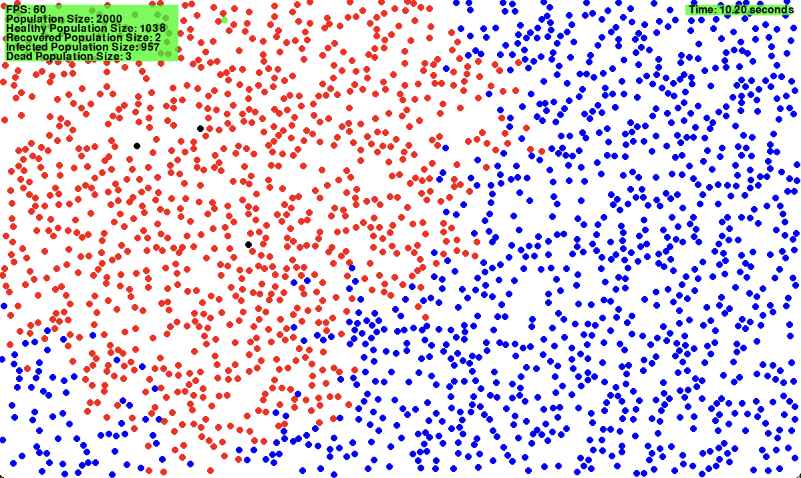
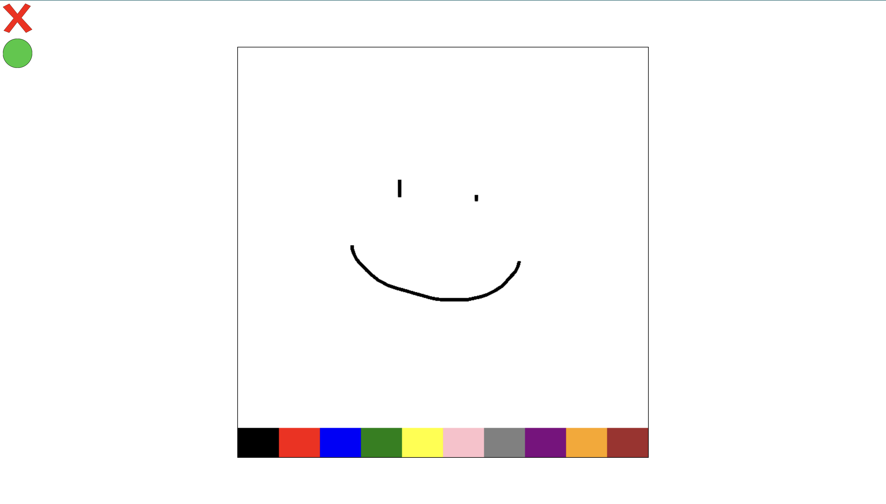

Projects
Disease Spread Simulator 1.0
Project Description
The Disease Spread Simulator 1.0 is a simulation program that models the spread of a disease within a population. The program uses a graphical interface to display the simulation, allowing users to visualize how different parameters affect the spread of the disease.
Video Demonstration
Goal of The Project
The goal of this project is to create a visual simulation of disease spread within a defined population. Users can set various parameters such as death rate, spread rate, and population size to observe how these factors influence the progression of the disease.
Technologies Used
Python: The simulation is implemented in Python programming language.
Tkinter: The graphical user interface is created using the Tkinter library.
Math Library: Mathematical calculations and formulas are performed using the math library.
Random Library: Random numbers are generated using the random library.
Disease Spread Sim 2.0
Project Description
This program like the first version, is a simulation program that models the spread of disease in a population. It also uses a graphical interface and has more parameters than the previous version.
Video Demonstration
Goal of The Project
While my first version of a disease spread simulation met my original goals, I still wasn't happy when it was completed. My two biggest issues were performance and it took a long time to display the chart at the end. I wanted to increase porformance by at least 10x and I did that.
Technologies Used
Python: The simulation is implemented in Python programming language.
Pygame: The graphics are created in the pygame module.
Matplotlib: The chart drawn at the end of the simulation was implemented using Matplotlib.
Math Library: Mathematical calculations and formulas are performed using the math library.
Random Library: Random numbers are generated using the random library.
Canvas Stream
Project Description
Canvas Stream is a program that is meant to make creating graphic programs easy. There are so many different frameworks and libraries for drawing graphics, so it can be hard to remember how they all work. Canvas Stream is made to allow python programs to use the Javascript canvas. Using websockets, a python server can communicate to a local hosted web page and allow you to use javascript canvas syntax in python to draw to the canvas.
Video Demonstration
Goal of The Project
The goal of this project was to make it easy to make a graphical program using python, but with javascript canvas syntax. The goals were to make it have the exact same syntax, and to work on Mac, Windows and Linux. That was important because while I have learned programming I have often run accross frameworks, libraries or engines that are platform exclusive.
Technologies Used
Python: Python is the language the backend is programmed in.
Html,css,javascript: The web page is made with these standard web languages.
Websockets: Websockets is a python module that allows the python send information to the web page.
Multiprocessing: This python module allows you to run multiple python scripts at once.
Asyncio: This module provides support for writing asynchronous code. It allows functions to be run whenever events are sent from the web page.
Json: The json module allows encoding and decoding json data. Json holds the commands that is sent to the webpage and the events that are sent back.